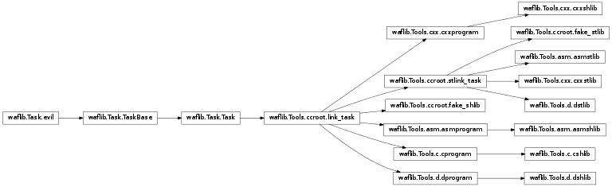

cxx¶
Base for c++ programs and libraries
- waflib.Tools.cxx.cxx_hook(self, node)[source]¶
Bind the c++ file extensions to the creation of a waflib.Tools.cxx.cxx instance
- class waflib.Tools.cxx.cxx(*k, **kw)[source]¶
Bases: waflib.Task.Task
Compile C++ files into object files
- scan(task)¶
Get the dependencies using a c/c++ preprocessor, this is required for finding dependencies of the kind:
#include some_macro()This function is bound as a task method on waflib.Tools.c.c and waflib.Tools.cxx.cxx for example
- class waflib.Tools.cxx.cxxprogram(*k, **kw)[source]¶
Bases: waflib.Tools.ccroot.link_task
Link object files into a c++ program
- class waflib.Tools.cxx.cxxshlib(*k, **kw)[source]¶
Bases: waflib.Tools.cxx.cxxprogram
Link object files into a c++ shared library
- class waflib.Tools.cxx.cxxstlib(*k, **kw)[source]¶
Bases: waflib.Tools.ccroot.stlink_task
Link object files into a c++ static library
- class waflib.Tools.cxx.stlink_task(*k, **kw)¶
Bases: waflib.Tools.ccroot.link_task
Base for static link tasks, which use ar most of the time. The target is always removed before being written.
- class waflib.Tools.cxx.link_task(*k, **kw)¶
Bases: waflib.Task.Task
Base class for all link tasks. A task generator is supposed to have at most one link task bound in the attribute link_task. See waflib.Tools.ccroot.apply_link().

- add_target(target)¶
Process the target attribute to add the platform-specific prefix/suffix such as .so or .exe. The settings are retrieved from env.clsname_PATTERN